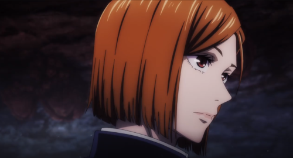

Minhas redes socias
Quem sou eu?

Meu nome é Kugisaki Nobara.
Estudante de maldições e feiticeira jujutsu.
No tempo livre espanco nerds.
Caso queira entrar em contato com minha pessoa, os links estão abaixo.
Facebook
Add lá po :)
Instagram
Passa lá também! :)
Clique aqui para prosseguir para a próxima página e ver um outro desafio que nos foi proposto.